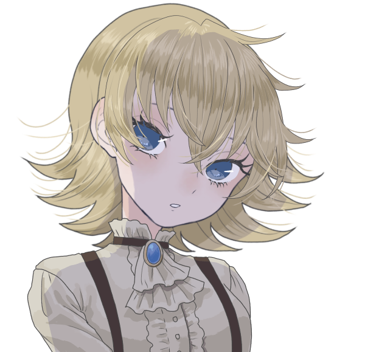

メインログ / 雑談ログ
Character Sheet
PC1：マヤ (キャラシート) PL：灸PC2：ヴァニタス (キャラシート) PL：がぶらす
PC3：日向雛 (キャラシート) PL：めい
PC4：メアリー＝ブラッドルード (キャラシート) PL：ふろずん
PC5：イクサ・スミェールチ (キャラシート) PL：タンゴ
Index
ステージ：砂上都市サラーブ◆Preplay◆
HO&PC紹介
◆Opening Phase◆
01
第1回目開始ポイント
ステージ：砂上都市サラーブ
西アジアに位置する非常に広大な砂漠に突如として現れた"砂上都市サラーブ"。"五本指"と呼ばれる統制者達と数多くのヴィラン達が蔓延る都市ではごく当然のようにオーヴァードが力を振るい、秩序と混沌が危ういバランスで続いている。
都市の人間のほとんどは裏社会の人間であり、RWステージの定番であるヒーローのような善性を持つ人間はほんの一握りいるかいないか。他人の助けを待っていては食いつぶされる弱肉強食の世界だ。
このステージは己の欲望に忠実である者達が跋扈する舞台である。
■簡易用語集
・砂上都市サラーブ
第一次レネゲイドウォー終結から数か月で大きく発展した大都市。
中心には摩天楼が聳え、狭いながらも一つの国として成り立つ程の人口と活気がある。
しかしそこに住む人間達は大なり小なりの悪事に手を染めているヴィランであり、五本指と呼ばれる者達と数々の組織に依って統括されている。
・五本指
人差し指。中指。薬指。親指。小指を指した統一組織の名称。
サラーブを大きく発展させた5人のヴィランで構成されているが、その顔を知る者は少なく、また自らその立場を（一部を除いて）明かそうとしない。
親指は傘下の裏切りに遭い死亡し、現在は二代目である。
そして小指は空席の状態となっており、都市の中では有名な話となっている。
・B.T.Cスーツ＆ウェポン
血涙結晶の工房が製造する武具。B.T.CとはBlood and Tears Crystalsの略語。
中指の傘下組織であり、オーヴァードの死体から高品質な防具や武器を仕立て上げること技術を保有している。
工房の主を名乗る女ヴィラン"クレーン"は「彼らが全うした人生を如何に表現できるか」と彼女なりの敬意と芸術性を持ち合わせているが、その感性に共感する者はサラーブでも限りなく少ない。
■砂上都市サラーブ
第一次レネゲイドウォー終結時期に突如としてアラビア砂漠に現れた砂上都市。
都市の中心には摩天楼が聳え立ち、狭い都市なれど一つの国として成り立つ程の活気が取り巻いている。
サラーブはアラビア砂漠北東部に位置し、都市内の人口は数万人。その8割以上が犯罪に手を染めているオーヴァードである為、有数の犯罪都市として各国から警戒対象としてマークされている。
住人の人種も多様であり、あらゆる国の言語が話されている。その背景としては国を追われた犯罪者などがサラーブへ安住を求めて身を寄せた結果だとも言う。
■五本指
サラーブを統治する統一組織。五本指と呼ばれる所以は5人のヴィランが設立時に関わっていたことが由来とされている。
ただし、在籍するメンバーは『自身が五本指である』ことを明かそうとせず、サラーブが成り立つ以前からいたヴィランにしか正体が知られていない。身分を明かせば次席を狙った裏切りや暗殺が起きることを危惧しているから、とも噂されている。
その為、新参の木端なヴィランには『五本指とかいう偉いやつが都市を仕切っている』程度の認識しかなく、自身を五本指の一人と騙る者が後を絶たない。

"人差し指" グリムギア
・DATA
性別：無
年齢：不明
ブリード：ピュアブリード
シンドローム：バロール
ワークス/カヴァー：レネゲイドビーイング/人差し指
【肉体】12 〈白兵〉5
【感覚】15 〈射撃〉8 〈知覚〉10
【精神】25 〈RC〉20 〈知識：レネゲイド〉25
【社会】30 〈交渉〉20 〈情報：ヴィラン〉10 他
・解説
都市の指導者。五本指のまとめ役。歯車のRBと自称している。
頭部が歯車という奇怪な容姿ではあるが、性格は物腰柔らかく、敵を作りにくい。
"中指"のスコーピオに人差し指の座を狙って反旗を翻されたこともあったが、瞬く間に彼一人が制圧したという。それ以来、スコーピオの野心は鳴りを潜めた。
表の顔は「都市管理局局長」を名乗っている。管理局はグリムギアと、彼の部下である数名のオーヴァードで構成されており、都市の現状を常に把握する為に働いている。
サラーブが危機的状況にあれば、彼はPC達に官局局長の名で依頼を出すだろう。

"中指" スコーピオ
・DATA
性別：男
年齢：32
ブリード：クロスブリード
シンドローム：バロール/ハヌマーン
ワークス/カヴァー：ヴィラン/中指
【肉体】11 〈白兵〉8 〈回避〉5
【感覚】14 〈射撃〉9
【精神】17 〈RC〉10 〈意思〉8 〈知識：ヴィラン〉12
【社会】15 〈交渉〉18 〈調達〉20 〈情報：FH〉12 他
・解説
都市の市場を取り仕切る闇商人。
粗暴で野蛮、口が悪くグリムギアと対照的に敵を作りやすい男。
彼の行う事は倫理に欠けることが多々あるが、その全ては都市を想ってのことである。決して狂っている訳ではない。
表の顔は「闇市場のボス」を名乗っている。サラーブで仕入れるアイテムの半分以上は彼からもたらされることは間違いない。

"薬指" ネオン・ファルシオン
・DATA
性別：女
年齢：約700歳
ブリード：クロスブリード
シンドローム：オルクス/モルフェウス
ワークス/カヴァー：ヴィラン/薬指
【肉体】14 〈白兵〉10 〈回避〉8
【感覚】12 〈射撃〉5
【精神】18 〈意思〉10 〈知識：ヴィラン〉10
【社会】13 〈交渉〉8 〈調達〉10 〈情報：噂話〉14 他
・解説
都市の要。
おちゃらけた性格で誰にでも平等に接する。が、刹那主義。快楽主義の傾向がある女。いつも明るく楽しくがモットーであるようだ。
都市内の建物の殆どが彼女の組織によって建てられ、インフラの一部も運営している。都市に住む全ての住人が彼女の恩恵を受けていると言っても過言ではない。
表の顔は「カジノの支配人」を名乗っている。小指が空座となる前は「不動産王」の肩書だったが、華々しい方がええとの事で現在はカジノの支配人を名乗ることとなった。
自身が薬指であることを隠そうとしないので、割とよくポロっと正体を零す。
"小指" 不在
現在の"小指"は空席であることは都市では周知の事実。
しかし理由は明らかになっておらず、自らその地位を捨てたとも、何かの責任をとって退いたとも噂されている。


"親指" エトワール・ウェイストルム
・DATA
性別：女
年齢：12
ブリード：クロスブリード
シンドローム：ノイマン/エグザイル
ワークス/カヴァー：ヴィラン/親指
【肉体】 8 〈白兵〉5 〈回避〉6
【感覚】15 〈射撃〉10
【精神】10 〈意思〉8 〈知識：ヴィラン〉5
【社会】14 〈交渉〉10 〈調達〉9 〈情報：ヴィラン〉20 他
・解説
都市の番犬。懲罰者。
指の中で最年少で新参の少女。前任者の父は部下の裏切りに遭い死亡。自身の手で裏切り者を討ったことで親指の座に就いた。
ヴィランで組織した傭兵団"デザート・ハウンド"を率いており、彼女は彼らを家族と呼び、使役する。
指達の前では甘く見られぬ様に大人の姿に転じ、親指らしく頼りある頭目を演じている。
表の顔は「エトワールファミリーのボス」を名乗っている。傘下の組織を束ね、サラーブ内で組織間の無用な軋轢を生まない為に日々尽力している。
五本指の中で最年少であるが、組織を束ねる責任感は誰よりも持ち合わせている。
■歴史
第一次レネゲイドウォー終結時、敗走した一部のヴィラン達は身を隠す為にアラビア砂漠へと集った。期が熟すまで身を潜め、牙を研ぐための場所を設けたのだ。
ヴィランズネットを介して同胞を募った結果、砂漠には数百人規模のヴィランが集結。小さな集落を築くも過酷な環境に耐え切れず多くの離反者が出たが、それでも残ったヴィランがいたのは指導者である"グリムギア"の存在があったからだろう。
その後、ふらりと現れたファルシオンの手によりまともな建造物が建ち始め、町と呼べるまで発展を遂げた。
レネゲイド解放から9年。各国のヒーロー達が共存を図ろうとした様に、砂漠のヴィラン達も共存を図ろうとしていた。最低限の秩序と統率を望んだ者は多かったが、秩序を望まないヴィランに依って暴動が起きる。
この暴動はしばらくして鎮圧されたものの町への被害は大きく、癖の強いヴィラン達を纏め上げ、力ない者を統べる指導者達が必要と判断した"グリムギア"が『五本指』を結束。図らずしも強者が弱者を統べるヴィランらしい組織となった。
それから僅か数年。始めは烏合の衆にも満たなかった集落は"砂上都市サラーブ"と名乗る大都市へと発展を遂げる。
しかし周辺各国がサラーブを見過ごすはずもなく、膨れ上がった悪の居城に幾度となくヒーロー達を送り込み都市を陥落させようと試みた。だが統率されたヴィランはヒーロー達の想像以上に強力であり、未だ都市は健在である。
それでも立て続けに襲来するヒーロー、果てには都市外から面白半分で襲撃するヴィランなどから防戦する為に都市は保守的にならざるを得ず、当初の目的とは外れた体制となってしまった。
■施設
・オルタ・スクレイパー
サラーブの中心にそびえる高層ビル。月に1回、指達の会議が開かれるが緊急で召集されること方が多い。
普段は行政機関として機能しており、"人差し指"たるグリムギアの城となっている。
・ブラックマーケット
サラーブの繁華街を指す。食料品からオーヴァード専用の装備まで揃う巨大闇市場。
店の多くを"中指"のスコーピオが仕切り、市場の賑わいは昼夜問わず治まることはない。
・賭場
古今東西の非合法ギャンブルが集う区画。その華やかさはラスベガスのカジノに劣らない。
以前までは"小指"の管轄であったが、不在の今は施設を建築した"薬指"ファルシオンに権利が譲渡された。
・デザート・ハウンド
オーヴァードで構成された私設傭兵団。治安維持の為に都市内にいくつかの支部を設けている。
管理者である"親指"のエトワールは"中指"、"薬指"と契約を結んでおり、彼らの施設にガードを派遣することも多い。
指以外の悪漢達からは都市内で正義面をするデザート・ハウンドを目の敵にしており、存在自体が煙たがられている。
・ジャンクヤード
言わずもがなゴミの山であるが、怪しい人影を見たと噂が絶えない。大方は密売か密談に訪れたヴィランである。
・宿泊施設
カジノリゾートに並び立つ高級ホテル群。都市外から訪れる金持ち向けである。
どれかの最上階が"薬指"の拠点らしい。その全てが拠点とも。
・スリムハウス
多くの住民が住むアパートメント。都市の中心から離れるほど住居は貧層となるが、"薬指"の管理するアパートメントは最低限の設備が整えられている。
・診療所
ノーマルからオーヴァードまで利用可能。治療費が高く貧民は利用しづらい。
■ユニークアイテム
【ヴィランズスカー】
種別：その他
必要経験点：0
都市の住人であることを証明する物。獣の爪に裂かれたような斜めの三本線が印象的。
ヒーローズクロスと同様にレネゲイドウィルスの鎮静作用がある。多種多様な言語が飛び交う都市では自動翻訳機の機能も果たす。
このアイテムを所持している場合、バックトラックのダイスを振る前にあなたの侵蝕率を10点減少させることができる。この効果は1シナリオに1回まで使用できる。
【B.T.Cスーツ】
種別：防具
ドッヂ：-2 行動:-3
装甲値：7
必要経験点：25
血涙結晶の工房が製作したオーダーメイドスーツ。
極めて高性能だが非倫理的な製法で仕立てられ、レネゲイドの異常活性を促すため着用には注意が必要。
この防具を取得すると、あなたは【肉体】【精神】【社会】の内で1つのみを選択して3上昇させる。基本侵蝕率を+10させる。
【B.T.Cウェポン】
種別：効果参照 技能:効果参照
命中：-1 攻撃力：10
ガード値：3 射程：効果参照
必要経験点：25
血涙結晶の工房が製作したオーダーメイドウェポン。
使用者のレネゲイドと深く結びつき、エフェクトの威力を底上げさせる。ごく稀に脈動を感じられるのは気のせいだろう。
この武器を取得すると、種別を"白兵""射撃""RC"の中から一つ選択する。選んだ種別は技能に適応される。
"白兵"選択時、射程は至近となる。この武器を使用した白兵攻撃ではダイスを+2個する。効果が適用されるたびに侵蝕率を+1する。
"射撃"選択時、射程は視界となる。この武器を使用した射撃攻撃では攻撃力を+5する。効果が適用されるたびに侵蝕率を+3する。
"RC"選択時、射程は視界となる。この武器を使用したRC攻撃では攻撃力を+5する。効果が適用されるたびに侵蝕率を+4する。
Preplay
マヤ :
キャラシート
◆PC1用ハンドアウト◆
シナリオロイス:ストレイ
ヴァニタス :
キャラシート
◆PC2用ハンドアウト◆
シナリオロイス:“異なる隣人（アウトサイド・ネイバー）”
独自に事件を調査していたキミ（理由付けは自由）は“異なる隣人”と名乗る硝子化事件の首謀者らしき人物と対峙する。
しかし“異なる隣人”は手にしていた鏡から放たれた光に紛れて姿を眩ませてしまう。
光を浴びたキミは不可解な感覚を覚えるのであった。
日向雛 :
キャラシート
◆PC3用ハンドアウト◆
シナリオロイス:ジャス＆ティティ
ジャス＆ティティはキミが都市の新参者だった頃から親交のある姉弟だ。
彼らは時にキミの助けとなったり、逆に救われもした持ちつ持たれつの関係を築いていた。
そんな姉弟が突如として姿を消した。都市では珍しくもないことだが、硝子化事件のことが脳裏を過ったキミは不安に駆られて調査に乗り出すのであった。
名前 :
キャラシート
◆PC4用ハンドアウト◆
シナリオロイス“アベル”
ある日、キミは“アベル”を名乗る人物から依頼が申し込まれる。内容は「“異なる隣人”が持つアイテムを回収し引き渡すこと」
“アベル”は多額の前金に加え、成功した暁には言い値の報酬まで約束するのだった。
名前 :
キャラシート
◆PC5用ハンドアウト◆
シナリオロイス:エトワール・ウェイストルム
キミは関係はどうあれ、エトワールに頼りにされる存在だ。
最近の硝子化事件が彼女の傘下組織、延いてはシマにまで影響が出始めている。
その影響はキミの活動にも支障が出始めているため、事態を重く見た彼女は共同で事件の解決を申し出る。
Main play
Scene01
場所
To Be Continued...